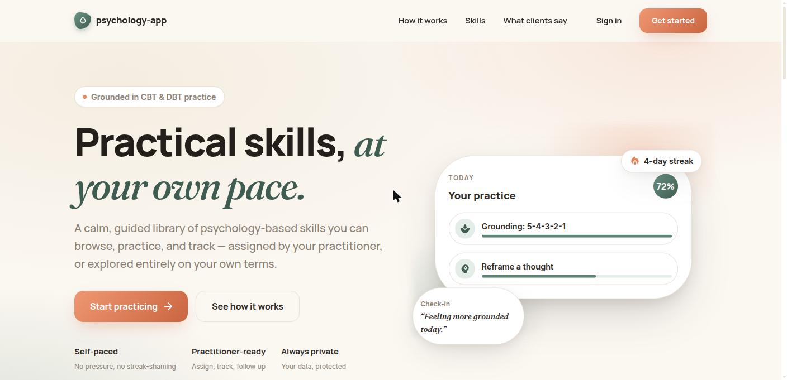
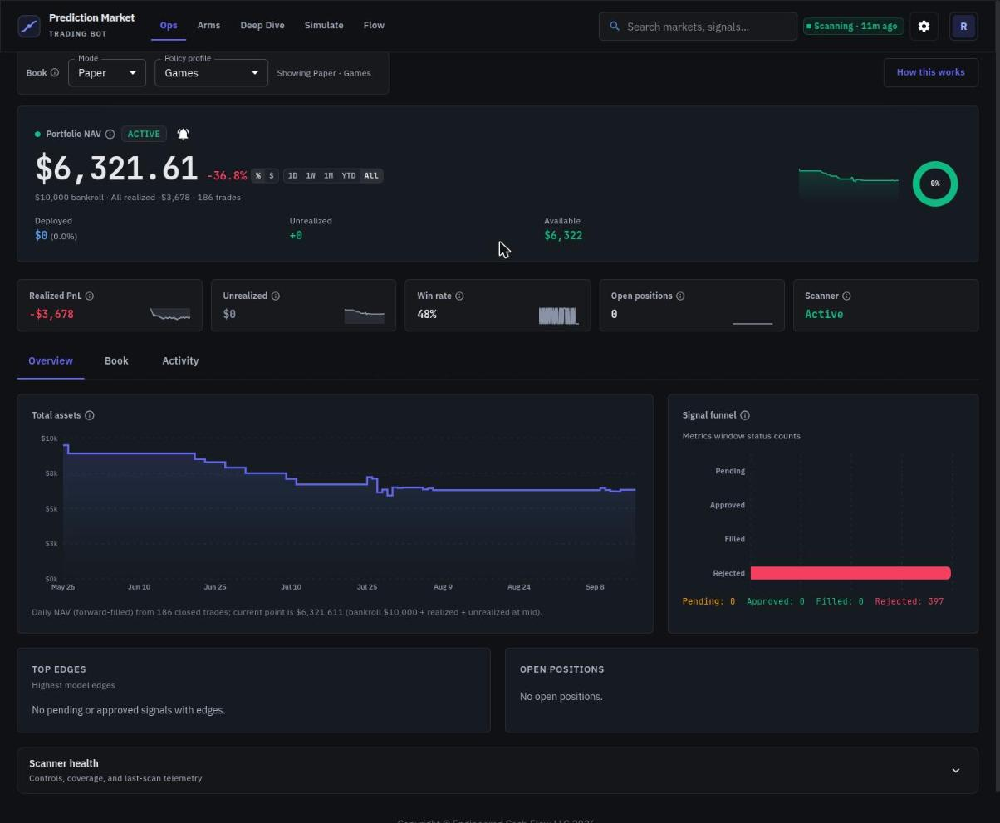
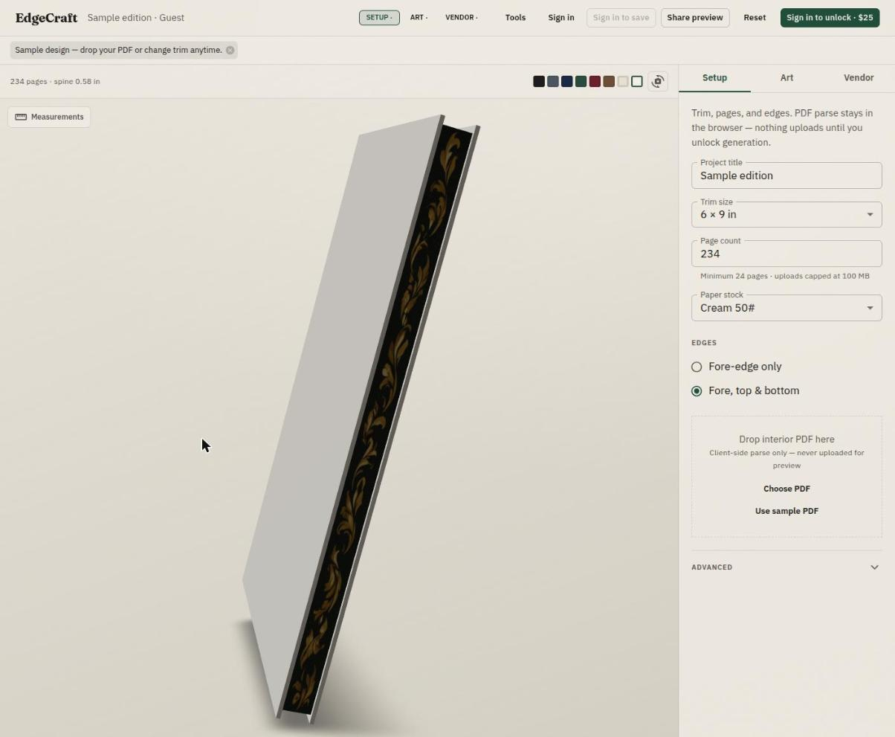
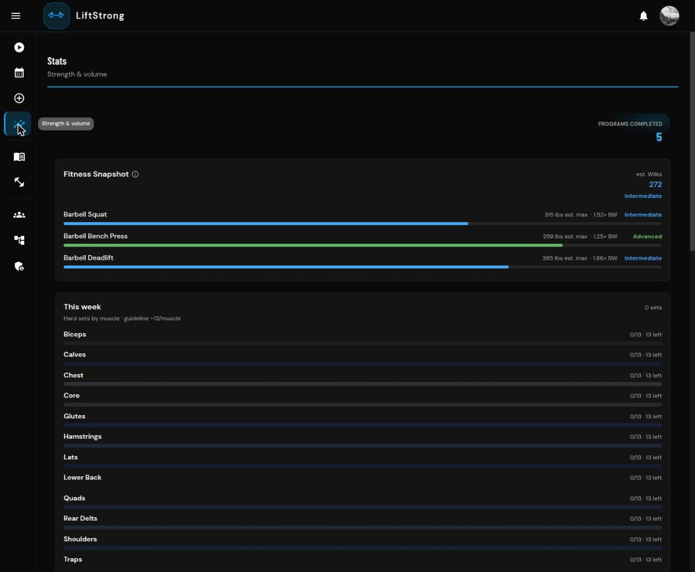
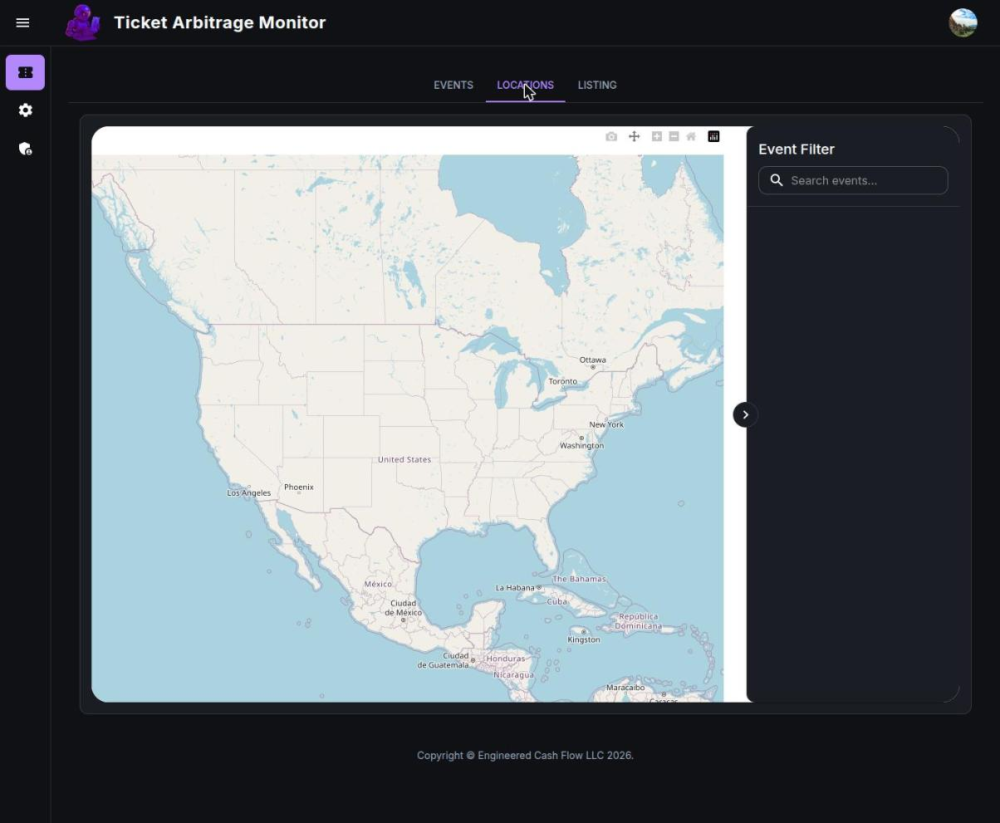
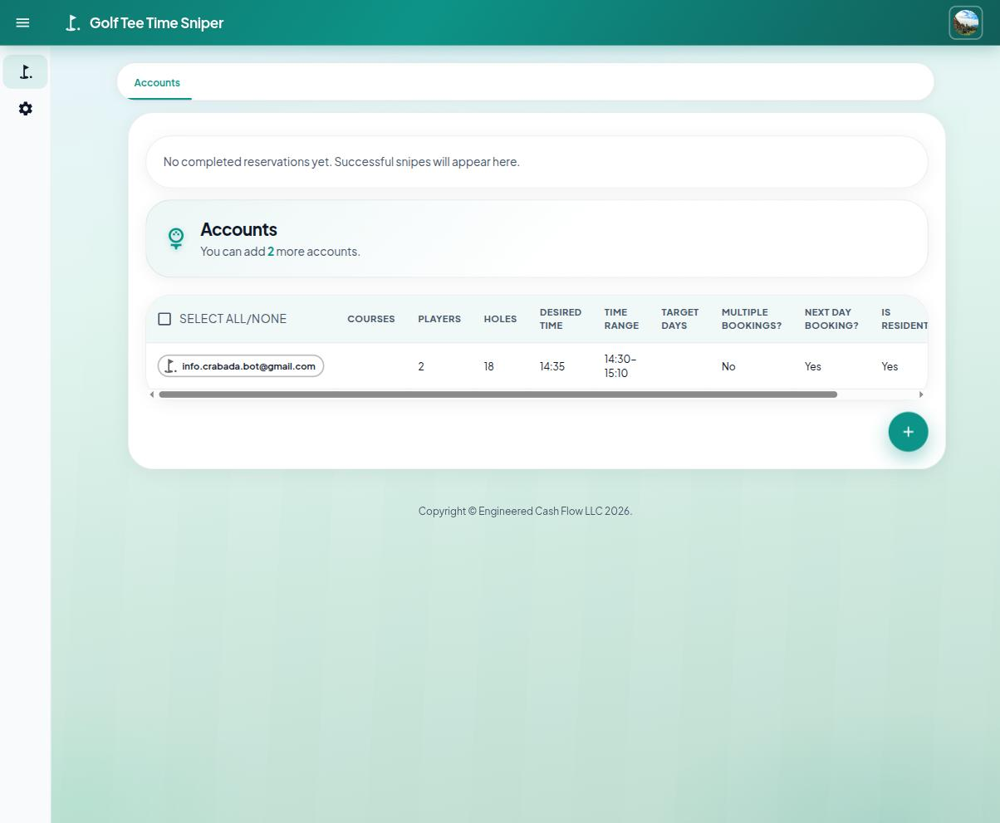
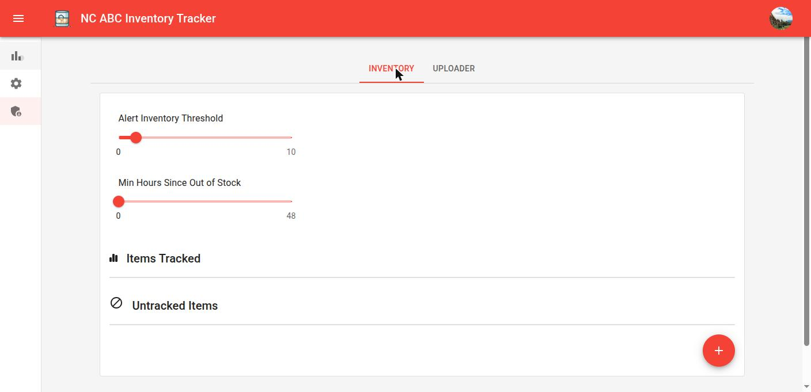
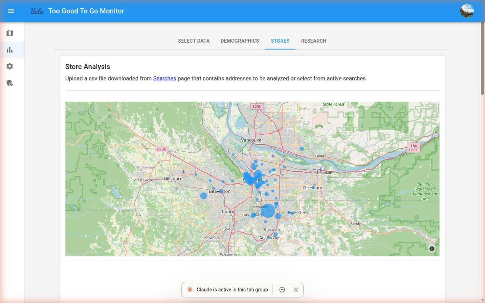

Featured Podcast

Why Great Engineers Still Need to Stay in the Trenches - RTRS Real Talk Podcast episode on why great engineers should keep doing hands-on work even as they grow into leadership roles.

Coredump #020: Hidden Architecture of Autonomy at Skydio - A deep dive into the technology behind Skydio.

Ross Yeager: How To Build Your Real Estate Team Remotely - A guide to building remote teams in real estate.

Ross Yeager: Passive Income, Business Mentorships, and Investing Remotely Podcast #131 - An insightful discussion on passive income and remote investing.

Bigger Cash Flow Podcast 082: Remote Investing and Engineering Cash Flow w/ Ross Yeager - Discussing real estate investing with Bigger Cash Flow
Upwork
Articles About Me
Projects
Shipped Products
- Skydio R1 Autonomous Drone
- Skydio S2 Autonomous Drone
- Skydio X2 Autonomous Drone
- Skydio Dock for X10
- Skydio X10 Autonomous Drone
- Skydio R10 Autonomous Indoor Tactical Drone
- Boosted Boards V2
- Altera USB Blaster II FPGA Programmer
GitHub Projects

Psychology App
A full-stack therapeutic content platform: a CBT/DBT skill library with per-client assignment, progress tracking, and streaks, built on a Firebase Firestore + Cloud Functions monorepo. Demonstrates a complete solo build end to end — practitioner-facing data model, real-time client progress sync, and a polished, brand-consistent UI.

Polymarket Trading Bot Dashboard
A quant-trading operations console for an automated Polymarket bot, pairing live portfolio monitoring with an interactive backtesting engine and a model-explainability tool that walks any trade through its scoring math step by step. Built to make a black-box trading algorithm auditable and tunable in real time.

EdgeCraft (Book Edge Design Tool)
A client-side 3D rendering engine for previewing custom book edge art at exact trim size and page count, entirely in-browser with zero uploads until checkout. Solves a hard visualization problem — mapping flat artwork onto a curved, variable-thickness page stack — while gating paid file generation behind a free preview.

LiftStrong (Hypertrophy Training App)
A hypertrophy training tracker combining program design, adaptive load suggestions, and Wilks/e1RM strength analytics with an embedded video exercise library. The stats engine correlates training volume against logged pain data over time — applied data modeling on top of a fast, daily logging UI.

Ticket Arbitrage Monitor (StubHub Bot)
Operator dashboard for a StubHub resale-arbitrage bot, exposing the bot's entire trading strategy — markup, timing, capacity thresholds, auto-discovery — as live, adjustable controls instead of buried config files. Turns an opaque background script into a monitorable product surface.

Golf Tee Time Sniper
Multi-account configuration and monitoring UI for an automated tee-time booking bot, letting a user run several booking profiles in parallel with SMS alerting on success. A clean example of wrapping a scrappy automation script in a real, multi-user product interface.

NC ABC Inventory Alert Tracker
A targeted alerting tool for allocated liquor restocks, with threshold and stability-window logic to filter real restocks from noisy inventory blips, plus bulk CSV import for tracking dozens of SKUs at once. A clean example of solving a real, time-sensitive problem with well-tuned automation.

Too Good To Go Monitor
A research data pipeline and analytics dashboard for surplus-food listings, built to support academic food-access research at UCLA. Turns raw scraped listing data into store-level rating gauges, price distributions, and demographic cross-references — the ETL-to-insight pipeline that data-facing roles actually look for.
And many more on GitHub...
Hosted Apps
- Psychology App
- Polymarket Dashboard
- EdgeCraft
- LiftStrong (Hypertrophy App)
- Ticket Arbitrage Monitor (StubHub)
- Golf Tee Sniper
- NC ABC Inventory Tracker
- Too Good To Go Monitor